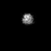
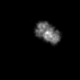

最小
最大
平均値
標準偏差
標準誤差
0
41.7822
0.83338
4.38611
0.0438611
| オプション | 必須項目/選択項目 | 説明 | デフォルト |
|---|---|---|---|
| -i1 | 選択 | 入力ファイル1設定 | NULL |
| -i2 | 選択 | 入力ファイル2設定 | NULL |
| -o | 必須 | 出力ファイル設定 | NULL |
| -m | 選択 | モードを設定 | 0 |
| -I | 選択 | ファイルの入力アレイ | stdin |
| -h | 選択 | ヘルプを表示 |
| モード | 説明 |
|---|---|
| 0 | 画像データ値はそのまま |
| 1 | 画像の枚数分、画像データ値を割る |
|
最小 |
0 |
|  | 最小 |
0 |
|  | 最小 |
0 |
最小 |
0 |